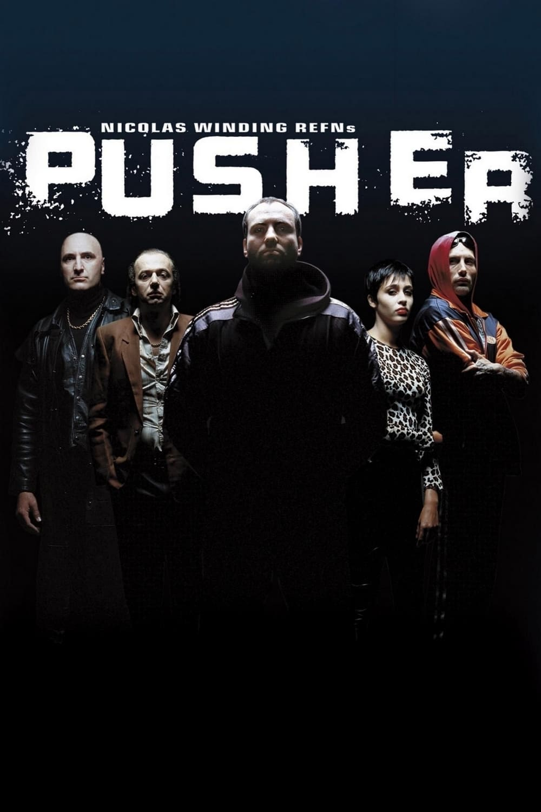
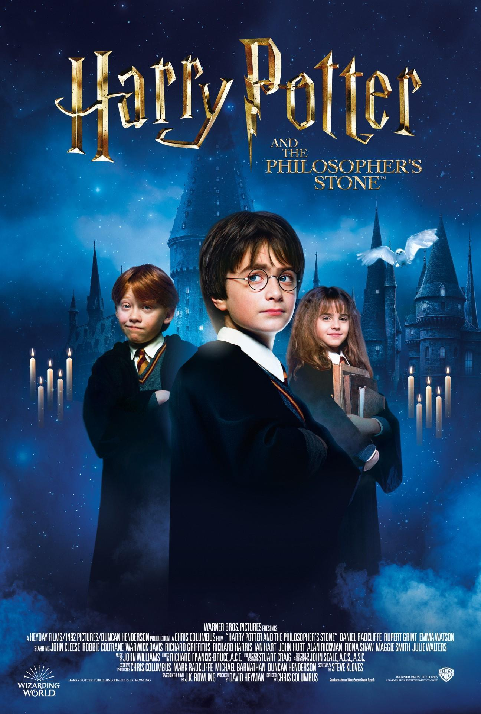
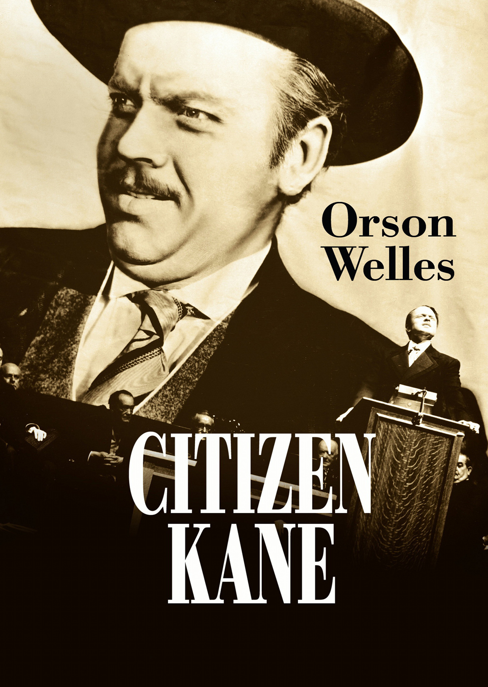
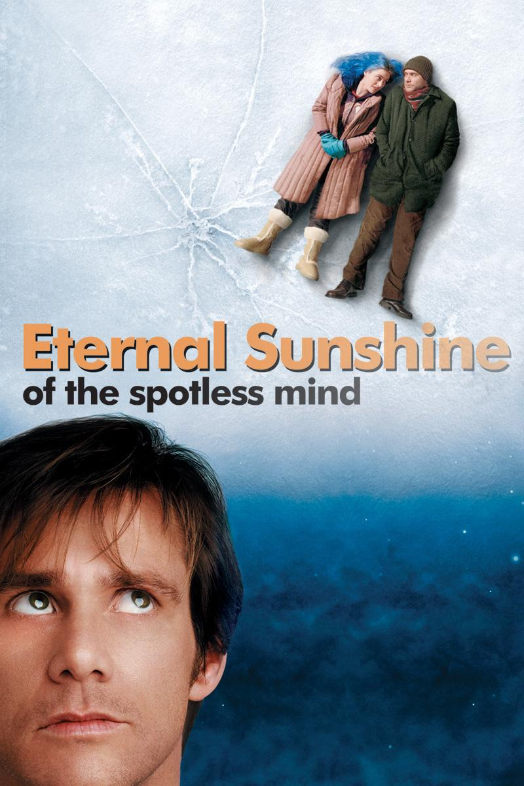

Login To Vote For This Weeks Film
| Film |
Director |
Release Date |
Summary |
|  |
Nicolas Winding Refn |
1996 |
A drug pusher grows increasingly desperate after a botched deal leaves him with a large debt to a ruthless drug lord. |
|  |
Chris Columbus |
2001 |
An orphaned boy enrolls in a school of wizardry, where he learns the truth about himself, his family and the terrible evil that haunts the magical world. |
|  |
Orson Welles |
1941 |
Following the death of publishing tycoon Charles Foster Kane, reporters scramble to uncover the meaning of his final utterance; 'Rosebud'. |
|  |
Michel Gondry |
2004 |
When their relationship turns sour, a couple undergoes a medical procedure to have each other erased from their memories. |
 |
Michel Gondry |
2004 |
|